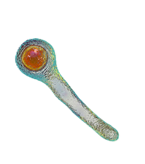
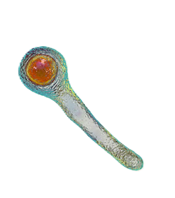

Descripción microbiológica
Clostridium tetani es un bacilo grampositivo anaerobio estricto, delgado (0.5-1.7 µm x 2-18 µm), con esporas terminales que le confieren forma de "palillo de tambor". Presenta flagelos perítricos que le permiten movilidad en ambientes reducidos. Su pared celular contiene ácido teicoico y peptidoglicano, pero carece de cápsula. Es catalasa-negativo y no fermenta carbohidratos. Las colonias en agar sangre son translúcidas con hemólisis beta tras 48-72 horas en anaerobiosis a 37°C. Produce la potente neurotoxina tetanoespasmina (TeNT) y tetanolisina (hemolisina).
Características distintivas
- Tinción: Gram-positivo (en cultivos jóvenes), esporulado (esporas resistentes).
- Metabolismo: Anaerobio estricto (crece en zonas de bajo potencial redox).
- Resistencias: Esporas resisten 1 hora en agua hirviendo y desinfectantes comunes.
- Factores de virulencia: Toxina tetánica (TeNT, 150 kDa) y tetanolisina.
Ecología y transmisión
Habita en suelos contaminados con heces animales (especialmente equinos y humanos). Las esporas persisten años en ambiente (resistentes a UV, sequía y químicos). Penetra al organismo a través de heridas contaminadas (punciones, quemaduras, cordón umbilical en neonatos). No es contagioso de persona a persona. Factores de riesgo incluyen falta de vacunación, heridas necróticas, partos en condiciones insalubres (tétanos neonatal) y uso de drogas intravenosas.
Factores ambientales
- Supervivencia: Esporas sobreviven >40 años en suelo, resisten 121°C/10 min (autoclave estándar).
- pH óptimo: 7.0-7.4, pero esporas toleran pH 5.0-9.5.
- Biocidas: Sensibles a glutaraldehído al 2%, peróxido de hidrógeno al 6%, hipoclorito al 1% (30 min).
Mecanismos de patogenicidad
La patogenicidad depende de la producción de toxinas:
| Factor | Mecanismo | Efecto clínico |
|---|---|---|
| Tetanoespasmina (TeNT) | Bloquea liberación de GABA/glicina en interneuronas inhibitorias | Espasmos musculares dolorosos (trismo, opistótonos) |
| Tetanolisina | Hemólisis y daño tisular local | Necrosis que favorece anaerobiosis |
Enfermedades clínicas
- Tétanos generalizado: Rigidez muscular ascendente (trismo, risa sardónica, opistótonos), hiperactividad autonómica.
- Tétanos neonatal: Incapacidad para mamar, espasmos y rigidez en primeros 28 días de vida (mortalidad >80% sin tratamiento).
- Formas locales/cefálicas: Rigidez focal o parálisis craneales (prognóstico reservado).
- Complicaciones: Fracturas vertebrales, rabdomiólisis, arritmias cardíacas.
Diagnóstico y tratamiento
Métodos diagnósticos:
- Clínico (no requiere confirmación microbiológica en contextos endémicos).
- Cultivo anaeróbico de herida (agar sangre + calor suave para esporulación).
- PCR para gen tetX (codifica la toxina) en muestras tisulares.
Manejo terapéutico:
- Inmunoglobulina antitetánica (HTIG): 3000-6000 UI IM para neutralizar toxina libre.
- Control de espasmos: Diazepam (0.1-0.2 mg/kg IV), midazolam, relajantes musculares.
- Antibióticos: Metronidazol IV (500 mg/6h x 7-10 días) para reducir carga bacteriana.
- Soporte vital: Intubación precoz en tétanos severo (riesgo de paro respiratorio).
Prevención y control
- Vacunación: Toxoide tetánico (TT) en esquema primario (3 dosis) + refuerzos cada 10 años.
- Profilaxis post-exposición: TT + HTIG en heridas contaminadas no inmunizados.
- Asepsia quirúrgica/obstétrica: Desinfección de cordón umbilical con clorhexidina.
- Vigilancia: Notificación obligatoria en 90% de países (OMS objetivo eliminación neonatal).
Datos epidemiológicos
- Causa ~34,000 muertes/año mundialmente (95% en África/Asia).
- Tasa letalidad sin tratamiento: 100% (20-50% con cuidados intensivos).
- Reducción del 96% en casos neonatales desde 1988 gracias a vacunación materna.